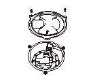
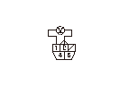
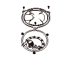
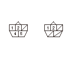
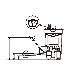
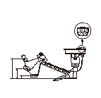

フューエル メータ/フューエル センダ ユニット/フューエル サブ ユニットの点検
4WD車:
火気厳禁のこと。
点検を行う前に
コンビネーション メータの自己診断を行い
、フューエル メータの作動を確認する。
ヒューズ ボックス内No.22メータ（7.5A）ヒューズを点検する。
•
正常な場合は、ヒューズ ボックス内No.22メータ（7.5A）ヒューズとコンビネーション メータ間コードの断線を確認する。
•
異常がある場合は、ヒューズ ボックス内No.22メータ（7.5A）ヒューズとコンビネーション メータ間コードの短絡および各部品の内部短絡を点検する。
HDSをデータ リンク カプラに接続し、ボディ エレクトリカルからテスト モード メニューを選択し、
DTCを確認する。
•
DTCが表示されていない場合は、
3
の点検へ進む。
•
DTC B1175
または
B1176
が表示された場合は、表示された故障診断を行う。
両側リヤ シートを倒し、カーゴ フロア フラップをめくり、フロア カーペットの後端をカーゴ フロア フラップの下から引出す。
両側リヤ シートを起こし、
リヤ シート レッグ取付けボルトを全て外す。
両側リヤ シート クッションを持上げたまま保持し、フロア カーペットの後側を外す。
左側メンテナンス リッド（A）、フューエル ポンプ5Pカプラ（B）を取外す。

イグニッション スイッチをON（
II
）にし、フューエル ポンプ5PカプラのNo.1端子とNo.2端子間の電圧を測定する。
•
バッテリ電圧がある場合は、
10
の点検を行う。
•
電圧がない場合は、イグニッション スイッチをOFFにし、
8
の点検を行う。

右側メンテナンス リッド（A）、フューエル サブ ユニット5Pカプラ（B）を取外す。

フューエル ポンプ5PカプラのNo.1端子とフューエル サブ ユニット5PカプラのNo.2端子間の導通を確認する。
•
導通がある場合は、フューエル サブ ユニットとコンビネーション メータ間の若葉、紫コード、フューエル ポンプとコンビネーション メータ間の橙、灰コードの断線を確認する。
•
導通がない場合は、フューエル サブ ユニットとフューエル ポンプ間の赤コードの断線を確認する。
イグニッション スイッチをOFFにする。
フューエル ポンプをフューエル タンクから取外す。
センダ ユニットのフロート アームを曲げないように注意すること。
フューエル サブ ユニットをフューエル タンクから取外す。
センダ ユニットのフロート アームを曲げないように注意すること。

フューエル ポンプ5PカプラのNo.1端子とNo.2端子間の抵抗値がフロートを上下させることでスムーズに変化することを確認したあと、以下のフロート位置において抵抗値を測定する。
•
異常がある場合は、フューエル センダ ユニットを交換する。
•
異常がない場合は、
14
の点検を行う。
フロート位置
F
警告灯
E
抵抗値（Ω）
9-11
291.4-345.2
374.4-382.2

フューエル サブ ユニット5PカプラのNo.1端子とNo.2端子間の抵抗値がフロートを上下させることでスムーズに変化することを確認したあと、以下のフロート位置において抵抗値を測定する。
•
異常がある場合は、
フューエル サブ ユニットを交換する。
•
異常がない場合は、
15
の点検を行う。
フロート位置
ストッパF
メータのF点
E
抵抗値（Ω）
9-11
244.2-250.2
397.6-405.8
フューエル ポンプ、フューエル サブ ユニット5Pカプラを接続する。
フロートを‘‘F’’の位置に保持し、イグニッション スイッチをON（
II
）にする。
フューエル メータ損傷防止のため、長時間フロートを‘‘F’’の位置に保持しないこと。
フューエル メータのインジケータが‘‘F’’の位置を示すことを確認する。
•
‘‘F’’の位置を示さない場合は、
コンビネーション メータを交換する。
•
‘‘F’’の位置を示す場合は、フューエル メータおよびフューエル センダ ユニット、フューエル サブ ユニットは正常である。


 点検を行う前に
点検を行う前に